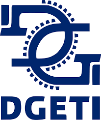

CBTIS 16


 2
2 5
5 7
7 8
8-
¿Qué es DGETI?
Se muestra información sobre el tema.
-
CBTIS 16
Se muestra información sobre el plantel.
-
Requisitos para ingresar
Se muestra información sobre los requisitos que se necesitan para entrar en el plantel.
-
Instalaciones
Se muestra información las instalaciones del plantel.
-
Especialidades en el Plantel
Se muestra información sobre las especialidades que hay en el plantel.
-
Perfil de Egreso
Se muestra información del perfil de egreso de los alumnoos.
-
Docentes
Se muestra información de los docentes.
-
Datos del desarrollador
Se muestra información del autor de la aplicación.



 1
1 7
7 8
8